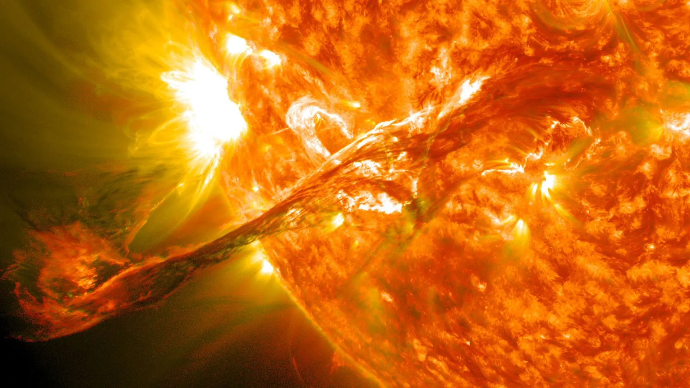

Mercúrio é o primeiro planeta do nosso sistema solar, e um dos quatro planetas classificados como rochosos. Teve o seu nome batizado em homenagem ao Deus mensageiro da mitologia romana.

A gravidade de Mercúrio possue o valor de 3,7 m/s², isto é, ela equivale a mais ou menos 40% da força gravitacional terrestre.
Por estar localizado mais próximo do Sol, Mercúrio não possue satélites naturais em decorrência das fortes tempestades solares que impedem a presença de tais corpos celestes. Outra curiosidade é que o planeta também não possue nenhum satélite artificial em sua órbita.
Após o rebaixamento de Plutão, Mercúrio passou a ser considerado o menor planeta do nosso sistema solar, com um raio equatorial de 2439,7 Km.
A atmosfera de Mercúrio é composta por átomos de argón, néon e hélio e apresenta uma pressão muito baixa, cerca de um bilhão de vezes menor do que a da Terra ao nível do mar.
A Mariner 10, lançada em 3 de novembro de 1973, tinha o objetivo de explorar e estudar a atmosfera, a superfície e as características físicas do planeta. A partir dela, foi possível mapear cerca de 45% da superfície de Mercúrio entre os anos de 1974 e 1975. Já a sua sucessora, a Messenger, lançada em 3 de agosto de 2004, teve como objetivo fotografar as áreas não vistas pela Mariner 10, e ainda por cima, analizar com maior precisão a composição da superfície, atmosfera e magnetosfera do local.